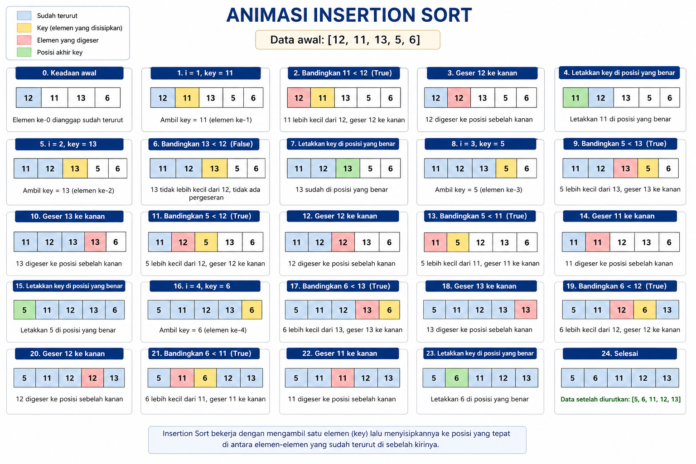
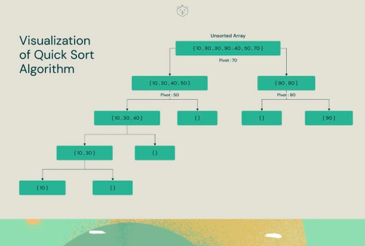
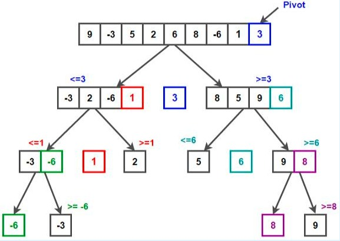

Insertion Sort
Insertion Sort adalah algoritma pengurutan yang cara kerjanya mirip dengan bagaimana kita menyusun kartu di tangan. Bayangkan Anda memegang tumpukan kartu yang teracak. Anda mengambil satu kartu, lalu membandingkannya dengan kartu-kartu di sebelah kirinya untuk mencari posisi yang tepat, lalu menyelipkannya (insert) di sana. Proses ini diulangi sampai semua kartu berada di posisi yang benar. Karakteristik Utama: Efisien untuk data kecil: Sangat cepat jika jumlah datanya sedikit. Adaptive: Sangat cepat jika data memang sudah hampir urut. Stable: Tidak mengubah urutan elemen yang nilainya sam
Ilustrasi

Implementasi Python
def insertion_sort(arr):
# Dimulai dari indeks ke-1 karena elemen ke-0 dianggap sudah "terurut"
for i in range(1, len(arr)):
key = arr[i] # Elemen yang akan disisipkan
j = i - 1
# Geser elemen yang lebih besar dari key ke kanan
while j >= 0 and key < arr[j]:
arr[j + 1] = arr[j]
j -= 1
# Letakkan key di posisi yang benar
arr[j + 1] = key
# Contoh penggunaan
data = [12, 11, 13, 5, 6]
insertion_sort(data)
print("Data setelah diurutkan:", data)
Penjelasan :
Misal array: [5, 2, 9]
1. Iterasi 1 (i=1): key adalah 2.
- Apakah 2 < 5? Ya!
- Geser 5 ke kanan: [5, 5, 9].
- Taruh 2 di depan: [2, 5, 9].
2. Iterasi 2 (i=2): key adalah 9.
- Apakah 9 < 5? Tidak.
- Loop while tidak jalan.
- 9 tetap di tempatnya: [2, 5, 9].
Quick Sort
Quick Sortadalah salah satu algoritma pengurutan data yang sangat efisien dan populer dalam pemrograman. Algoritma ini menggunakan prinsip Divide and Conquer (bagi dan taklukkan) untuk memecah kumpulan data menjadi bagian-bagian kecil sebelum diurutkan. Secara teknis, Quick Sort bekerja dengan memilih satu elemen sebagai pivot (titik tumpu), lalu memindahkan elemen lain sedemikian rupa sehingga elemen yang lebih kecil dari pivot berada di sebelah kirinya, dan yang lebih besar berada di sebelah kanannya.
Ilustrasi

Artinya:
Memilih satu elemen sebagai pivot Membagi data menjadi dua bagian: Nilai lebih kecil dari pivot Nilai lebih besar dari pivot Mengurutkan kedua bagian secara rekursif Quick Sort termasuk algoritma yang cepat dan efisien untuk data besar. Contoh data : [8, 3, 1, 7, 0, 10, 2]
Cara kerja:
Contoh data: [8, 3, 1, 7, 0, 10, 2] Langkah 1: Pilih pivot = 7 Pisahkan: Kecil dari 7 = [3,1,0,2] Pivot = [7] Besar dari 7 = [8,10] Langkah 2: Urutkan bagian kiri dan kanan lagi. Bagian kiri: [3,1,0,2] Pivot = 1 Kecil = [0] Pivot = [1] Besar = [3,2] Terus dilakukan sampai semua urut. Hasil akhir: [0,1,2,3,7,8,10]

Implementasi Python
def quick_sort(data):
if len(data) <= 1:
return data
pivot = data[len(data) // 2]
kiri = [x for x in data if x < pivot]
tengah = [x for x in data if x == pivot]
kanan = [x for x in data if x > pivot]
return quick_sort(kiri) + tengah + quick_sort(kanan)
# Contoh
angka = [8, 3, 1, 7, 0, 10, 2]
hasil = quick_sort(angka)
print("Data awal :", angka)
print("Data urut :", hasil)